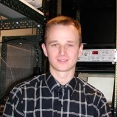
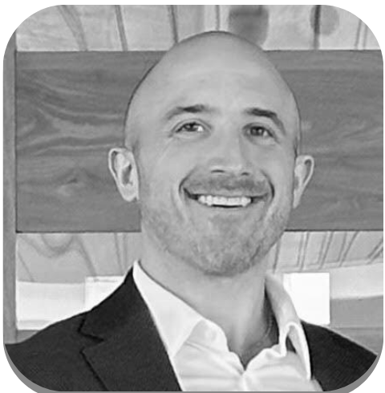

Dr. Tim Gallaudet
Rear Admiral, US Navy (ret),
Fmr acting head, NOAA,
CEO, Ocean STL Consulting
Meet the innovators, engineers, and thinkers shaping the future of data and technology.
CEO, Computer Science & Biophysics
I’m a Data Scientist and technical leader with experience across academic research and product development, leading machine learning for aerial object detection and tracking at Harvard’s Galileo Project and delivering end-to-end data-driven products in industry.

Rear Admiral, US Navy (ret),
Fmr acting head, NOAA,
CEO, Ocean STL Consulting
Rachford and Carlota A. Harris Professor at Stanford University School of Medicine
MSc Co-founder and SVP Strategic Operations at LiveRamp - NYSE:RAMP

Partnerships and Sales Leader, Global Marketing Solutions at Meta